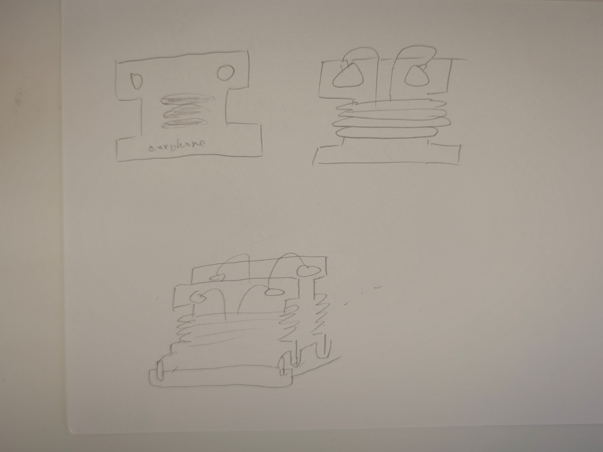
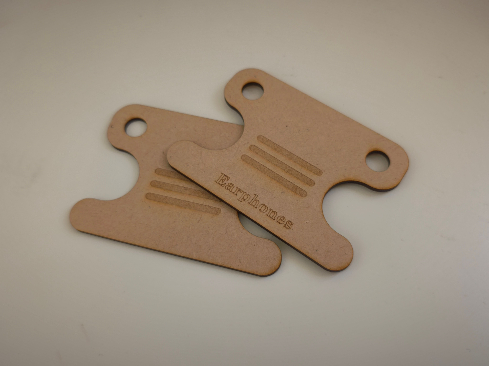
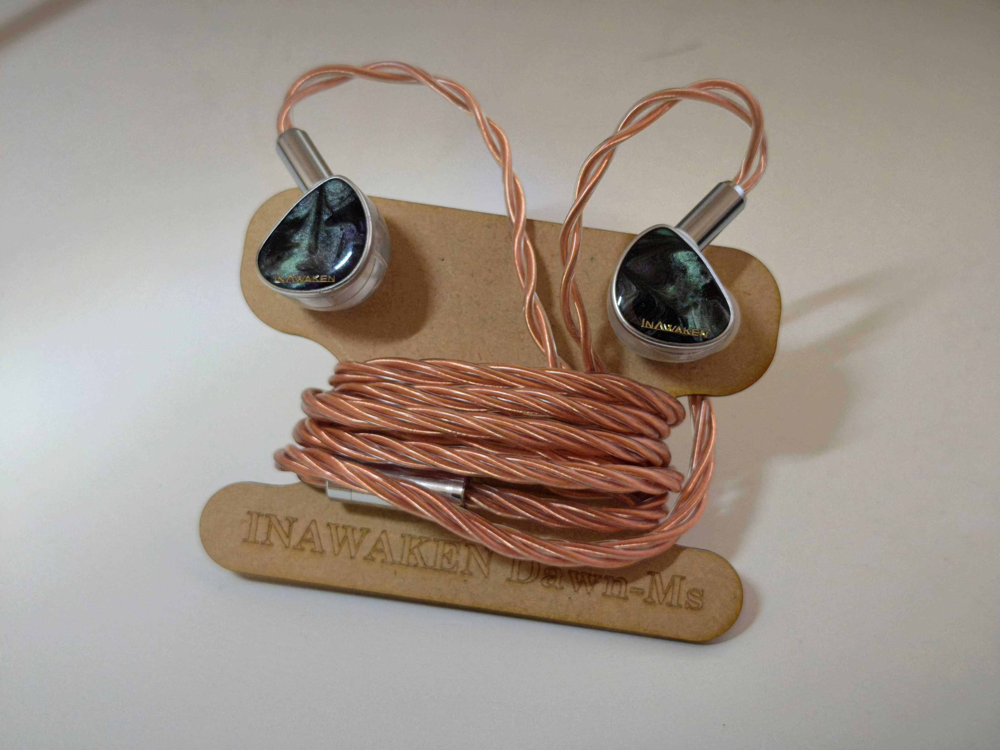
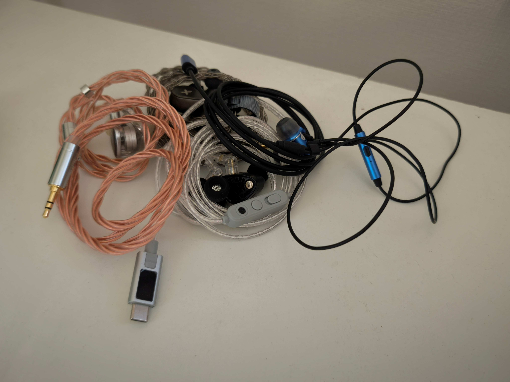

作品名 イヤホンカード



作品のdxfファイル
作品の説明
ケーブルがぐちゃっとなりがちな有線イヤホンのケーブルをまとめられるカード状の収納ガイド
保管のために置いておくだけでなく、ポケットに忍ばせておくこともしやすい。
制作理由

オーディオが好きでよくイヤホンを買うが、写真のようにゴチャゴチャした状態で机に置いたままになっていた。
折角きれいな見た目のイヤホンもあるのに見た目も悪く、ケーブルがまとまらないせいで使うのにも一苦労していた。
そこで、このようなイヤホンをまとめておけるようなものがあれば見た目もスッキリする上に、使いやすくなっていいのではないかと思った。
感想
実際に作った後に使ってみると、ある程度使いやすさは良くなったが、結局は机の上に無造作にポン置きすることになってしまい雑置きしている感じがぬぐえなかった。
なので、課題の時間には間に合わないが、今度スケッチの下に書いたようなカードをはめられる台座を作ることで、よりスタイリッシュに見せられるようにしようと思った。